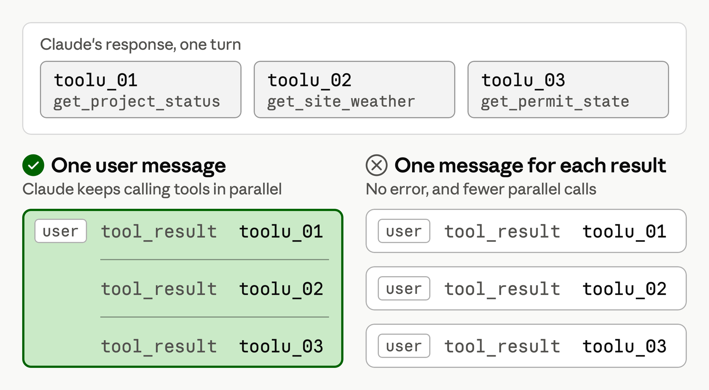

Параллельные вызовы инструментов: меньше задержка
Чему научитесь
Видео 3:16 и текст урока
К концу урока вы сможете:
- обработать в цикле каждый блок
tool_useиз ответа Claude и выполнить независимые вызовы одновременно; - вернуть все результаты одним сообщением
user, чтобы Claude и дальше вызывал инструменты параллельно; - отправить сбой инструмента как
tool_resultсis_error: true, не останавливая цикл.
Видео и текст урока.
Claude может запросить несколько инструментов в одном ответе, а ваш код — выполнить их одновременно. В видео проверяется рабочая площадка Meridian — вымышленной инженерно-консалтинговой компании. Если выполнять вызовы инструментов по одному, проверка занимает 19,9 секунды, а с параллельными вызовами — 10,8.
Демонстрация в этом видео записана в сентябре 2026 года, в ней использовалась модель Claude Sonnet 5 (claude-sonnet-5). На более новых моделях результаты могут отличаться.
Когда вызовы инструментов выполняются по одному, пользователь ждёт каждый из них по очереди.
Если нужные Claude инструменты не зависят друг от друга, он может запросить их все в одном ответе. Claude делает так по умолчанию, поэтому ваш цикл должен обработать каждый вызов инструмента и на каждый отправить результат.
Три вызова инструментов в одном ответе
Параллельный вызов инструментов (parallel tool use) означает, что один ответ содержит несколько блоков tool_use.
У Meridian есть скрипт на Python, который проверяет, готова ли рабочая площадка к полевым работам. Для этой проверки нужны три независимых друг от друга обращения: за статусом проекта, погодой на площадке и состоянием разрешения.
Вот что ответил Claude при проверке площадки Meridian: по одному блоку tool_use на каждый нужный ему инструмент.
{
"role": "assistant",
"stop_reason": "tool_use",
"content": [
{"type": "tool_use", "id": "toolu_01", "name": "get_project_status",
"input": {"job_number": "MEG-2026-0142"}},
{"type": "tool_use", "id": "toolu_02", "name": "get_site_weather",
"input": {"site": "Riverside"}},
{"type": "tool_use", "id": "toolu_03", "name": "get_permit_state",
"input": {"permit_id": "P-88213"}}
]
}
У ответа stop_reason равен tool_use, а у каждого вызова инструмента свой id.
Выполните каждый вызов
Цикл, написанный в расчёте на один вызов, читает только первый блок tool_use. Он отправляет один результат, два других вызова свои результаты так и не получают, и API отклоняет запрос. Поэтому соберите все блоки tool_use из ответа.
calls = [b for b in resp.content if b.type == "tool_use"]
Затем выполните эти вызовы одновременно. Каждое такое обращение большую часть времени ждёт ответа другой системы. Дайте каждому свой поток — и три ожидания наложатся друг на друга, а не сложатся.
with ThreadPoolExecutor() as pool:
results = list(pool.map(run_tool, calls))
run_tool выполняет один вызов инструмента и возвращает его результат; эту функцию мы соберём в следующих двух разделах.
Выполнять вызовы одновременно обычно безопасно, если они только читают данные и не зависят друг от друга, как обращения Meridian. Если инструменты меняют данные или должны выполняться в определённом порядке, возможно, лучше выполнять их один за другим.
Верните все результаты одним сообщением
Когда три вызова выполнены, Claude ждёт их результатов. Каждый результат возвращается в блоке tool_result, а его поле tool_use_id содержит id вызова, на который он отвечает.
result = {"type": "tool_result", "tool_use_id": call.id}
Каждый блок tool_use получает один tool_result, и все они идут в следующее сообщение пользователя.
messages.append({"role": "assistant", "content": resp.content})
messages.append({"role": "user", "content": results})

Если же ваш цикл отправляет каждый результат отдельным сообщением, переписка выглядит так, будто Claude запрашивал инструменты по одному. Это частая причина того, что Claude делает меньше параллельных вызовов.
Для неудачного вызова верните результат с ошибкой
Когда три вызова выполняются одновременно, один может упасть, а два других — выполниться успешно. Если ваш код выбросит исключение и его никто не перехватит, цикл остановится, и два удачных результата тоже пропадут.
Поэтому отправьте сбой обратно как результат. Это обычный tool_result с сообщением об ошибке в content и с is_error: true. В сообщении должно быть сказано, что пошло не так и что Claude стоит попробовать дальше.
try:
result["content"] = HANDLERS[call.name](**call.input)
except Exception as exc:
result["content"] = f"{call.name} failed: {exc}"
result["is_error"] = True
HANDLERS — словарь, где каждому имени инструмента сопоставлена функция Python, которая выполняет работу этого инструмента. Каждая функция возвращает строку, потому что content у tool_result — это строка или список блоков содержимого.
Соберите цикл
Фрагменты кода выше складываются в цикл Meridian, показанный ниже. В скрипте уже подготовлены client, tools, prompt и HANDLERS.
На странице урока здесь интерактивное упражнение: дан короткий цикл на Python, который выполняет вызовы инструментов Claude параллельно, и для каждой из пяти задач нужно выбрать строку программы, которая её выполняет. При неверном выборе появляется подсказка, при верном — объяснение. Первая задача: «Claude запрашивает все три обращения в одном ответе, и вы хотите, чтобы цикл забрал из него каждый вызов инструмента». Программа из упражнения:
from concurrent.futures import ThreadPoolExecutor
def run_tool(call):
result = {"type": "tool_result", "tool_use_id": call.id}
try:
result["content"] = HANDLERS[call.name](**call.input)
except Exception as exc:
result["content"] = f"{call.name} failed: {exc}"
result["is_error"] = True
return result
messages = [{"role": "user", "content": prompt}]
while True:
resp = client.messages.create(
model="claude-sonnet-5", max_tokens=1024,
tools=tools, messages=messages,
)
if resp.stop_reason != "tool_use":
break
calls = [b for b in resp.content if b.type == "tool_use"]
with ThreadPoolExecutor() as pool:
results = list(pool.map(run_tool, calls))
messages.append({"role": "assistant", "content": resp.content})
messages.append({"role": "user", "content": results})
Главное
- Выполняйте каждый вызов инструмента из ответа, а если вызовы не зависят друг от друга — одновременно.
- Возвращайте по одному
tool_resultна каждый вызов и кладите их все в одно сообщение пользователя. - Не отправляйте каждый результат отдельным сообщением: от этого параллельных вызовов становится меньше.
- Отправляйте сбой обратно как результат с
is_error: true, чтобы один неудачный вызов не останавливал цикл.
Дальше
Следующий урок — «Потоковые вызовы инструментов: без зависших индикаторов»: как с потоковой передачей показывать имя инструмента и его входные данные по мере их поступления, чтобы пользователь видел, что происходит, а не смотрел на крутящийся индикатор.
Оригинал урока: Parallel tool calling: Cut the latency.